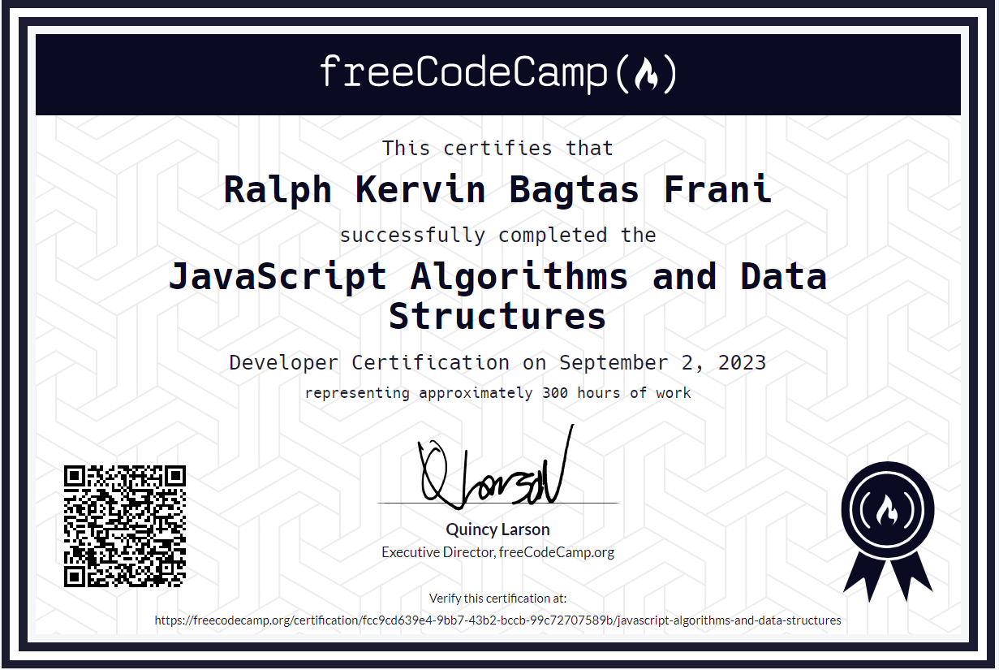

Ralph Kervin B. Frani

CONTACT INFORMATION
Email Address: ralphkervin.frani@cvsu.edu.ph
Mobile Number: 09936575542
Address: Malagasang 2-E Imus City Cavite
PERSONAL INFORMATION
Born: 31 August 2005 at Imus Cavite
Citizenship: Filipino
Religion: Catholic
Height: 5'4
Weight: 65kg.
Gender: Male
Organization: Math Club Member
sy 2017 - 2018 Participation: Debate
Leadership: Practical Research
Education:
Bachelor of Science in Computer Science
Cavite State University – Imus Branch
2023 - 2027
Senior High School Graduated
Kin Yang Academy Dasmarinas City, Cavite
2021 - 2023
High School Graduated
Kin Yang Academy Dasmarinas City, Cavite
2017 - 2021
Elementary Graduated
Malagasang 3 Elementary School Imus City Cavite
2011 - 2017
Sports: Chess, Cycling,
Family
Father: Vener B. Frani
Mother: Debbie B. Frani
Brother: Roiz Denver B. Frani
Sister: Yedda Devine B. Frani
youngest son: Ralph Kervin B. Frani
I am Ralph Kervin B. Frani, and this is my online space. Born on August 31, 2005, in the vibrant city of Imus, Cavite, I proudly embrace my Filipino heritage and Catholic faith. Standing at 5'4" and weighing 65kg, I'm on a journey to discover, learn, and share.
My educational path has been an exciting one. Currently pursuing a Bachelor of Science in Computer Science at Cavite State University – Imus Branch, I'm set to graduate in 2027. Before this endeavor, I completed my senior high school at Kin Yang Academy in Dasmarinas City, Cavite, from 2021 to 2023. The same institution saw me through my high school years from 2017 to 2021. My elementary education was at Malagasang 3 Elementary School in Imus City, Cavite, where I proudly graduated in 2017. Beyond academics, I have a deep passion for sports, with a special love for chess and cycling.
Family holds a cherished place in my heart. As the youngest son of Vener B. Frani and Debbie B. Frani, I'm privileged to share this journey with my brother, Roiz Denver B. Frani, and my sister, Yedda Devine B. Frani. Together, we navigate life's joys and challenges, supporting one another in our individual pursuits and collective adventures.
Welcome to my corner of the web, where I share my experiences, interests, and aspirations. Join me on this exciting journey, and let's explore the world together.
ACIEVEMENTS
I'm proud to hold certifications in two essential areas of web development that reflect my dedication to honing my skills and knowledge. First, I earned a certificate in Responsive Web Design, which marked my entry into the world of web development. This credential highlights my proficiency in creating websites that adapt seamlessly to various screen sizes and devices, ensuring user-friendly experiences.
Building upon this strong foundation, I later obtained a certificate in JavaScript Algorithms and Data Structures. This certification signifies my expertise in one of the core languages of web development and my ability to create efficient, data-driven applications. With a strong foundation in algorithms and data structures, I'm equipped to solve complex problems and craft dynamic web experiences. These certifications reflect my passion for staying at the forefront of web development and my dedication to delivering high-quality projects that meet the evolving needs of today's digital landscape

FAMILY
Father Mother Brother Sister youngest son
02 2, 1970 09 20, 1969 12 15, 1997 06 22, 2004 08 31, 2005
ACTIVITIES
I had the honor of being one of the '18 Roses' in a dear friend's special celebration. It was a heartfelt moment filled with tradition and camaraderie, where each of us represented a unique symbol of friendship and support. Dancing the waltz and presenting a rose to our friend was a beautiful expression of our lasting bond.

Become an 18 roses (Feb 25. 2023)
In a separate but equally cherished occasion within our close-knit friend group, I also took on the role of an '18 Shot.' This lively tradition involved toasting to another friend's happiness and future success, with each shot symbolizing our well-wishes for their journey ahead. It's incredible how these customs bring us closer together, celebrating the milestones and creating enduring memories with friends who have become like family
Become 18 shot (July 6 2023
Beyond my close-knit friend group, I've had the privilege of forming lasting connections with another circle of friends. We've embarked on educational field trips that expanded our horizons and created unforgettable memories. Exploring new places and learning together has been an enriching experience that has strengthened our bonds.
Educational Field Trip (Apritl 26 2023)
Moreover, our shared recollection moments hold a special place in our hearts. These reflective gatherings allow us to cherish the journey we've undertaken together, celebrating our growth and the enduring friendships we've forged.
Recollection (May 31 2023)
But the adventure didn't stop there. After our graduation, we took a well-deserved trip to a resort, marking the beginning of a new chapter in our lives. These diverse experiences with different friend groups remind me of the beauty of friendship and the richness it adds to life's journey
After Graduation Celebration(July 28 2023)
We gathered as a family on a warm and sunny day to celebrate the birthdays of our dear late grandma and grandpa. It was a heartfelt occasion filled with love and cherished memories. Surrounded by the beauty of nature, we enjoyed a leisurely outing, sharing stories, laughter, and our favorite family dishes. As we celebrated their lives and the legacy they left behind, we felt their presence in our hearts. It was a day of reflection, gratitude, and a reminder of the enduring bonds that keep our family close, even in their absence
Family Bagtas Outing(August 7 2023)